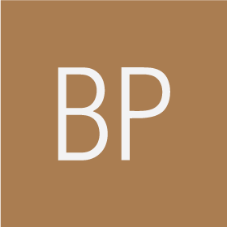

It's like a depth charge in the bath
For centuries the only source of borax, Na2B2O5(OH)4, was the
crystallized deposits of Lake Yamdok Cho, in Tibet. It was used as a
flux used by goldsmiths.
In 1808, Louis-Josef Gay-Lussac and Louis-Jacques Thénard working in
Paris, and Sir Humphry Davy in London, independently extracted boron
by heating borax with potassium metal. In fact, neither had produced
the pure element which is almost impossible to obtain. A purer type of
boron was isolated in 1892 by Henri Moissan. Eventually, E. Weintraub
in the USA produced totally pure boron by sparking a mixture of boron
chloride, BCl3 vapour, and hydrogen. The material so obtained boron was
found to have very different properties to those previously reported.
|  | ||||
| 5 | 10.81 | 2077°C | 4000°C | Metalloid |
Pure boron is a dark amorphous powder.
Boron is essential for the cell walls of plants. It is not considered poisonous to animals, but in higher doses it can upset the body’s metabolism. We take in about 2 milligrams of boron each day from our food, and about 60 grams in a lifetime. Some boron compounds are being studied as a possible treatment for brain tumours.
Amorphous boron is used as a rocket fuel igniter and in pyrotechnic
flares. It gives the flares a distinctive green colour.
The most important compounds of boron are boric (or boracic) acid, borax
(sodium borate) and boric oxide. These can be found in eye drops, mild
antiseptics, washing powders and tile glazes. Borax used to be used to
make bleach and as a food preservative.
Boric oxide is also commonly used in the manufacture of borosilicate
glass (Pyrex). It makes the glass tough and heat resistant. Fibreglass
textiles and insulation are made from borosilcate glass.
Sodium octaborate is a flame retardant.
The isotope boron-10 is good at absorbing neutrons. This means it can be
used to regulate nuclear reactors. It also has a role in instruments
used to detect neutrons.
Boron occurs as an orthoboric acid in some volcanic spring waters, and as
borates in the minerals borax and colemanite. Extensive borax deposits
are found in Turkey. However, by far the most important source of boron
is rasorite. This is found in the Mojave Desert in California, USA.
High-purity boron is prepared by reducing boron trichloride or tribromide
with hydrogen, on electrically heated filaments. Impure, or amorphous,
boron can be prepared by heating the trioxide with magnesium powder.